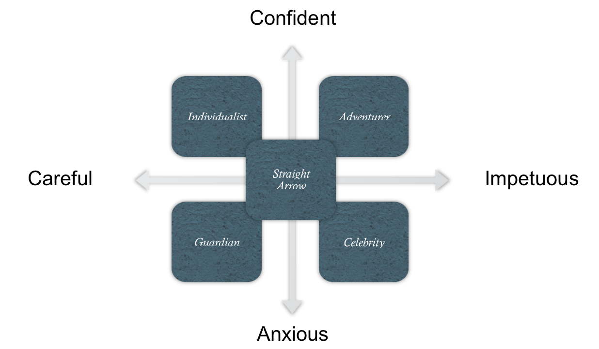

Barnewall Two-Way Model
- Passive investors - individuals who have become wealthy passively (e.g. inheritance, managers, etc.)
- Higher need for security and lower risk tolerance
- Active investors - individuals who have been actively involved in wealth creation (e.g. entrepreneurs)
- Higher risk tolerance and lower need for security
Five-Way Model

Diagnostic Process
- Interview the client and identify active or passive traits and risk tolerance
- Plot the investor on an active/passive and risk tolerance scale
- Test for behavioral biases
- Classify the investor into a behavioral type
- Passive preserver (PP)
- Friendly follower (FF)
- Independent Individualist (II)
- Active Accumulator (AA)
Limitations of Behavioral Typing
- Individuals may exhibit both forms of biases
- Individuals may exhibit characteristics of multiple behavioral types
- Individuals' behavior may change throughout the life-cycle
- Individuals within behavior types may require unique treatment (no one size fits all)
- Individuals may act irrationally and unpredictably regardless of type
Behavioral Factors and Portfolio Construction
- Intertia - tendency to not change asset allocations throughout time despite changing risk tolerances
- Naive diversification - "1/N" diversification strategy (i.e. allocating assets equally across categories)
- Investing in the familiar - tendency to invest in employer's stock
- Excessive trading - fees degrade returns
- Home bias - overweighting of domestic asset classes
Behavioral Factors and Analyst Forecasts/Research
- Overconfidence bias
- Self-attribution bias
- Representativeness bias
- Availability bias
- Illusion of control
- Hindsight bias
- Confirmation bias
- Gamblers' fallacty - incorrect prediction of a mean reversal
Behavioral Factors and Market Behavior
- Momentum
- Herding - occurs when many investors take the same side of a trade
- Regret aversion
- Disposition effect - the tendency to hold losers and sell winners
- Bubbles and crashes
- Value vs. growth stocks
- Halo effect - extrapolation of recent good results into the future